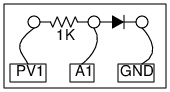

Schematic

- Voltage across the diode is read by A1.
- The current is obtained by dividing (PV1 - A1) by the resistance.
- The voltage at PV1 is incremented by steps and at each step the voltage acrossthe diode is measured.
Instructions
- Make connections, use 1N4148 to start with, and press START.
- Press FIT to fit the data with the equation of the PN junction.
- Use different color LED and repeat the experiment.